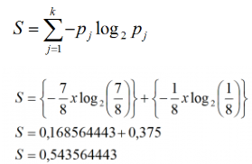
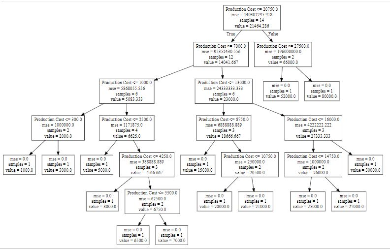

DECISION TREE (Pohon Keputusan)¶
Python | Decision Tree Regression using sklearn¶
Decision tree adalah alat pengambil keputusan yang menggunakan struktur pohon seperti flowchart. Dan merupakan alat yang digunakan untuk klasifikasi dan prediks, pohon keputusan merupakan diagram alur seperti struktur pohon, dimana setiap nod internal menunjukkan tes pada atribut, masing-masing cabang mewakili hasil tes, dan setiap node daun memegang label kelas.
Kontruksi pada Decision Tree¶
Sebuah pohon dapat "dipelajari" dengan memecah sumber set kedalam sub set berdasarkan tes nilai atribut. Proses ini diulang pada setiap subset yang berasal dalam cara rekursif yang disebut rekursif partisi. Rekursi selesai ketika subset semua di node memiliki nilai variable target yang sama, atau ketika membelah tidak lagi menambah nilai prediksi. Pembangunan klasifikasi pohon keputusan tidak memerlukan pengetahuan domain.
Representasi Decision Tree¶
Decision tree mengklasifikasikan instance dengan menyortir mereka menuruni pohon dari akar ke beberapa node daun, yang menyediakan klasifikasi instance. Sebuah instance diklasifikasi dengan beberapa tahapan :
-
Klasifikasi pada simpul pohon
-
Menguji atribut yang ditentukan
-
Memindahkan cabang pohon sesuai dengan nilai dari atribut
-
proses diulang untuk sub pohon yang berakar pada nod baru
Konsep Decision Tree¶
Decision tree digunakan untuk mengklasifikasi suatu sample data yang belum diketahui kelasnya, ke dalam kelas-kelas yang sudah ada. Jalur pegujian data adalah pertama melalui root node (simpul akar) dan terakhir adalah melalui leaf node (simpul daun) yang akan menyimpulkan prediksi kelas bagi data tersebut.
Proses Algoritma Dalam Decision Tree¶
-
Menghitung nilai Entropy total dataset
-
Menghitung Entropy dan Gain pada setiap atribut
-
Membuat table perhitungan pada Node
-
Membuat Node dengan hasil Gain tertinggi dari table
-
Mengulangi langkah 2-5 sehingga tidak ada node lagi.
Entropy¶
Adalah jumlah bit yang diperkirakan dibutuhkan untuk dapat mengekstrak suatu kelas (+ atau -) dari sejumlah data acak pada ruang sample. Untuk menghitung information gain, terlebih dahulu kita harus memahami suatu nilai entropy, entropy bisa digunakan sebagai suatu parameter untuk mengukur keberagaman dari suatu kumpulan sample data. jika kumpulan sample data semakin beragam, maka semakin besar pula nilai entropy. secara matematis, nilai entropy masing-masing instance dirumuskan sebagai berikut :
.png)
Gain Ratio¶
Gain merupakan reduksi yang diharapkan dalam entropy yang disebabkan oleh pengetahuan nilai atribut. Atribut dengan nilai gain terbesar dipilih sebagai tes atribut (simpul akar). Hal ini dapat digunakan untuk menentukan urutan atribut , dan urutan inilah yang nantinya akan membentuk pohon keputusan (decision tree).
Contoh Kasus¶
| No | Pelatih | Kadang sendiri | Latihan | Stamina | Mental | Menag |
|---|---|---|---|---|---|---|
| 1 | Pengertian | Ya | Rutin | Kuat | PD | Ya |
| 2 | Pengertian | Ya | Rutin | Kuat | Gerogi | tidak |
| 3 | Pengertian | Ya | Rutin | Lemah | PD | Ya |
| 4 | Pengertian | Ya | Jarang | Lemah | PD | Ya |
| 5 | Pengertian | Ya | Tidak ada | Lemah | PD | Tidak |
| 6 | Pengertian | Tidak | Rutin | Kuat | PD | Ya |
| 7 | Pengertian | Tidak | Jarang | Lemah | Gerogi | Tidak |
| 8 | Menekan | Ya | Rutin | Lemah | PD | Ya |
| 9 | Menekan | Tidak | Rutin | Lemah | Gerogi | Tidak |
| 10 | Menekan | Ya | Jarang | Lemah | Gerogi | Tidak |
| 11 | Menekan | Ya | Rutin | Kuath | PD | Ya |
| 12 | Menekan | Tidak | Rutin | Kuat | PD | Ya |
Atribut : pelatih, kadang sendiri, latihan, stamina, mental kelas : menang = ya atau tidak jumlah data ada 12, terdiri dari : ya = 7, tidak = 5.
Menghitung Entropy Total Dataset
Menghitung Entropy dan gain tiap atribut


Table perhitungan Node 1
dari gambar diatas dapat dilhat bahwa nilai gain tertinggi adalah pada attribut mental, maka mental yang akan menjadi node akar (root node). dalam atribut mental terdapat dua nilai yaitu "PD" dan "Grogi". karena atribut grogi sudah mengklasifikasikan kasus menjadi satu keputusan yaitu "Tidak", maka atribut ini tidak perlu melakukan penghitungan lebih lanjut, tetapi untuk atribut "PD" masih perlu dilakukan perhitungan lagi, karena masih terdapat nialai "ya" dan "tidak".
Gambar decision tree Node 1

Berikut table data yang akan dianalisis lebih lanjut yang memiliki atribut = PD
Menghitung Entropy total dari node 1.1:

Menghitung entropy dan gain keseluruhan atribut node 1.1

selanjutnya menentukan nilai gain tertinggi, gain tertinggi adalah di fitur Latihan, sebesar 0.5435. maka latihan yang akan dijadikan node selanjutnya, karena pada node latihan semua atributnya sudah mengklasifikasi menjadi satu keputusan, maka tidak perlu melakukan perhitungan lebih lanjut.
Dengan demikian decision tree akan tampak seperti berikut :
Python | Decision Tree Regession using sklearn¶
Step 1:
# import numpy package for arrays and stuff
import numpy as np
# import matplotlib.pyplot for plotting our result
import matplotlib.pyplot as plt
# import pandas for importing csv files
import pandas as pd Step 2:
# import dataset
# dataset = pd.read_csv('Data.csv')
# alternatively open up .csv file to read data
dataset = np.array(
[['Asset Flip', 100, 1000],
['Text Based', 500, 3000],
['Visual Novel', 1500, 5000],
['2D Pixel Art', 3500, 8000],
['2D Vector Art', 5000, 6500],
['Strategy', 6000, 7000],
['First Person Shooter', 8000, 15000],
['Simulator', 9500, 20000],
['Racing', 12000, 21000],
['RPG', 14000, 25000],
['Sandbox', 15500, 27000],
['Open-World', 16500, 30000],
['MMOFPS', 25000, 52000],
['MMORPG', 30000, 80000]
])
# print the dataset
print(dataset) Step 3:
# select all rows by : and column 1
# by 1:2 representing features
X = dataset[:, 1:2].astype(int)
# print X
print(X)Step 4:
# select all rows by : and column 2
# by 2 to Y representing labels
y = dataset[:, 2].astype(int)
# print y
print(y) Step 5:
# import the regressor
from sklearn.tree import DecisionTreeRegressor
# create a regressor object
regressor = DecisionTreeRegressor(random_state = 0)
# fit the regressor with X and Y data
regressor.fit(X, y)Step 6:
# arange for creating a range of values
# from min value of X to max value of X
# with a difference of 0.01 between two
# consecutive values
X_grid = np.arange(min(X), max(X), 0.01)
# reshape for reshaping the data into
# a len(X_grid)*1 array, i.e. to make
# a column out of the X_grid values
X_grid = X_grid.reshape((len(X_grid), 1))
# scatter plot for original data
plt.scatter(X, y, color = 'red')
# plot predicted data
plt.plot(X_grid, regressor.predict(X_grid), color = 'blue')
# specify title
plt.title('Profit to Production Cost (Decision Tree Regression)')
# specify X axis label
plt.xlabel('Production Cost')
# specify Y axis label
plt.ylabel('Profit')
# show the plot
plt.show()
Step 7:
# import export_graphviz
from sklearn.tree import export_graphviz
# export the decision tree to a tree.dot file
# for visualizing the plot easily anywhere
export_graphviz(regressor, out_file ='tree.dot',
feature_names =['Production Cost']) Output
